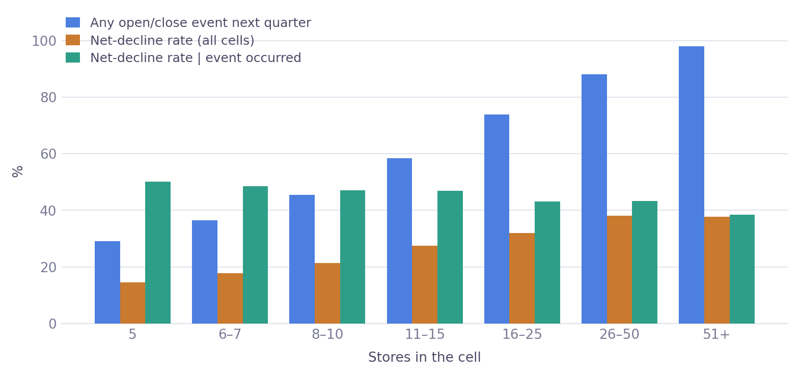
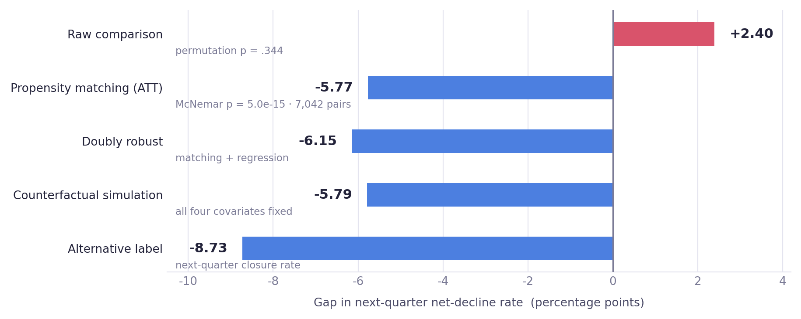
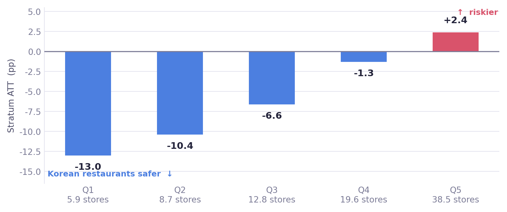
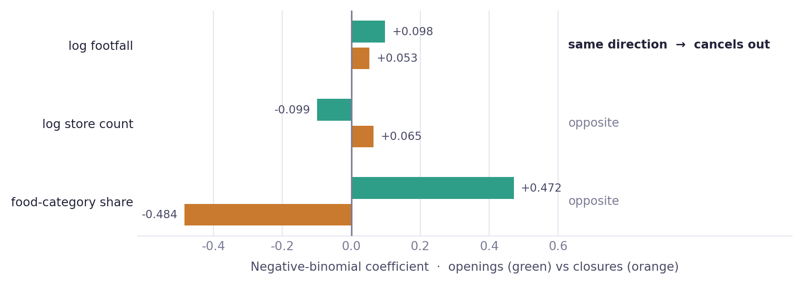
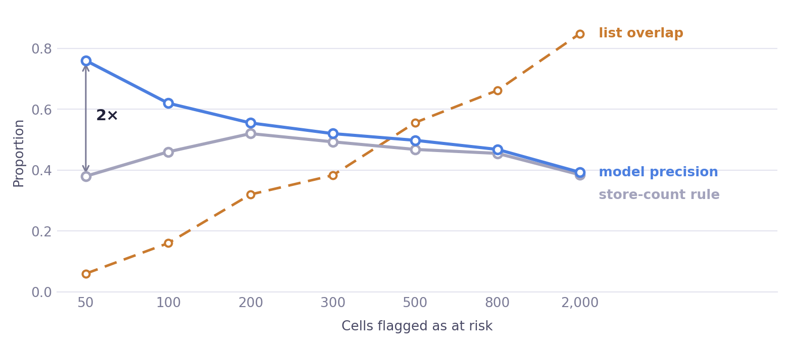
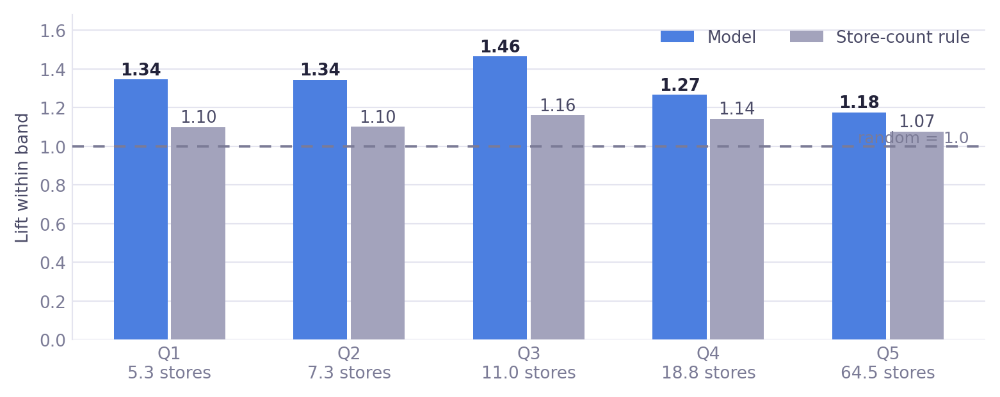
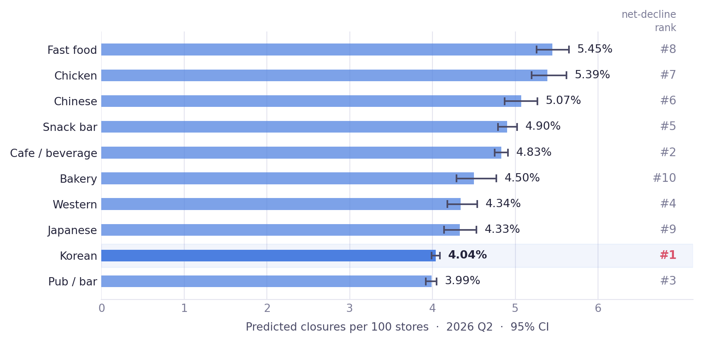

- Doubt
- We picked the highest of ten categories. Even with no real difference between them, the top one lands above the average.
- Measure
- Shuffled the label 1,000 times — breaking any link between category and outcome while holding every group size fixed — and measured how large a top-minus-mean gap appears on its own.
- Verdict
- Observed +1.70 pp against a null of +1.49 pp. p = .344 — 88% of the gap is the act of choosing.
00
Verification log
Every result that was doubted, and what the doubt returned
The strength of this project is not the difficulty of the methods. It is the number of times the result was doubted — five times, and twice the result was thrown out.
- Doubt
- Saying “we matched on store count” is not the same as the groups being comparable.
- Measure
- Standardised mean difference on all four covariates, before and after. Threshold |SMD| < 0.1.
- Verdict
- Store count 1.00 → 0.037 (96.3% reduction). All four clear the threshold — the ATT is interpretable.
- Doubt
- A mean will blend two effects pointing in opposite directions into one tidy number.
- Measure
- Split the 7,042 matched pairs into store-count quintiles and tested whether the stratum odds ratios can be treated as one.
- Verdict
- p < .0001 — the strata differ and the sign flips in the largest band. −5.77 pp must never be quoted alone.
- Doubt
- “Bigger cells are riskier” might only mean “bigger cells have events more often.”
- Measure
- Decomposed P(decline) = P(event) × P(decline | event) and estimated the store-count coefficient at each stage.
- Verdict
- Stage 1 +1.483, stage 2 +0.046 (p = .114) — the size dependence is entirely trapped in stage 1.
- Doubt
- A category rank correlation of 0.915 appeared — but store count alone reproduced it.
- Measure
- Split the data in half, ranked the categories independently in each half, and correlated the two rankings to get the reliability of the target.
- Verdict
- Reliability 0.198 → ceiling √0.198 = 0.444. Our 0.515 exceeds a ceiling it should not be able to reach, so it is noise.
The number I threw away not reported
Category rank correlation 0.515 looked like the strongest result in the project. It was removed, because the thing it measures — a ranking of ten categories — is itself too unstable to support it (V-05). Performance is stated only in cell-level terms: AUC 0.717 and a 1.52× top-decile lift, both against an explicit baseline.
01
The question
Who decides what with this number, and what could go wrong
District officers allocate consulting and emergency loans using a metric nobody had audited. The audit is the project.
The unit of analysis throughout is a cell — one commercial district × one food category × one quarter. Seoul's Commercial District Analysis Service publishes a net decline flag per cell each quarter — true when closures exceed openings. Officers rank food categories by it and send support to the top of the list. Korean restaurants sit at #1 every quarter.
Korean restaurants are also the largest category in alley districts, averaging 21.3 stores per cell against 10.3 for the other nine categories. More stores means more open/close events, and more events means more chances to land on the wrong side of a subtraction. The metric may be ranking size rather than risk.
Hypothesis H2
For the category with the highest net-decline rate, matching on store count and footfall will narrow the gap against other categories.
Sub-question
Among sales, footfall and store density, which characteristics actually relate to next-quarter net decline?
Unit
cell
Cells
67,475
Quarters
13
Positive rate
25.5%
The answer changes an action. If the gap comes from size confounding, category-level allocation has to be replaced by cell-level allocation conditioned on size. If it does not, the current process stands.
02
Data and preprocessing
Five decisions, and why each one was made
One column had silently changed meaning between file versions. Finding it moved the sample by 20.9% — more than any modelling choice in this project.
| Stage | Rows | Why |
|---|---|---|
| Raw store table | 995,377 | all business categories |
| 10 food categories × 13 quarters | 160,352 | scope |
| Label constructible | 147,138 | needs a following quarter |
| ≥ 5 stores | 67,495 | call ① below |
| Analysis sample | 67,475 | footfall and area valid |
① A five-store floor −54% of rows
Cells with two or fewer stores have 100% suppressed sales — the city withholds them so individual businesses can't be identified. Sales missingness falls from 45.4% overall to 7.1% once the floor is applied, which is what identifies the cause as disclosure policy rather than data loss. A three-store cell also swings to −33% net decline when one shop closes, so the label itself is unstable down there. The cost is more than half the rows, so every conclusion carries the scope note "cells with five or more stores."
② A column that changed meaning would have biased every category comparison
In the 2023–24 files, store_count is not total stores — it is non-franchise stores. The 2025 schema renamed it and introduced a separate total. Two identities confirm it at a match rate of 1.0000.
Correcting the mapping moved the sample from 55,795 to 67,475 (+20.9%), and the increase was wildly uneven: chicken +390% against Korean +2%. Left uncorrected, franchise-heavy categories would have been systematically undercounted in exactly the comparison this project is about.
③ Sales excluded from the matching covariates
Missingness differs by category, so including sales would drop control cells selectively and bias the match itself. Sales is used in the regression with a missing-indicator, and in matching only as a robustness check.
④ Leakage guard on the time split
A row is (district, category, quarter t) but the label is measured at t+1. Training on the validation quarter would let the model see the target quarter's outcome. It is held out.
⑤ A three-layer guard on every join silent failure
Five tables merge into one panel. A duplicated key raises no error — it silently multiplies rows, and every statistic downstream is then computed on inflated data. Because the failure is silent, the guard has to be explicit:
1 assert the right-hand key is unique before merging 2 merge(..., validate="many_to_one") pandas raises if the relation breaks 3 assert len(out) == len(left) the row count must not move
All three fired clean on every merge. Row counts are stated at each stage above so a reader can check the arithmetic rather than take it on trust.
| Use | Feature quarter | Target quarter | Label |
|---|---|---|---|
| Train | 2023 Q1 – 2025 Q3 | 2023 Q2 – 2025 Q4 | yes |
| Validate | 2025 Q4 | 2026 Q1 | yes |
| Score | 2026 Q1 | 2026 Q2 | none — the deliverable |
03
The label
Why a small cell records “safe” without being safe
43.7% of cells recorded a zero because nothing happened at all — not because nothing bad happened.
The flag fires when closures outnumber openings in the following quarter:
net_decline(t) = 1 if closures(t+1) > openings(t+1)
A cell with five stores has a 71% chance that neither an opening nor a closure occurs at all next quarter — and with nothing on either side of the comparison, the cell is filed as safe. A cell with 51 or more stores has a 98% chance that something happens.
Once something does happen, the chance that it nets out negative sits between 38% and 50% whatever the size — and it falls as cells get larger. So what separates a flagged cell from an unflagged one is almost entirely whether an event occurred, which is a question about size.

That structure is exact, not approximate. Net decline is a strict subset of "an event occurred," so the probability of decline given no event is zero by construction — and it measures as zero:
Two-stage identity, verified on the data
P(event) 0.5153 × P(decline | event) 0.4582 = 0.2361 · observed P(decline) = 0.2361
P(decline | no event) = 0.0000 across 15,451 cells — zero positives, not a rounding artifact.
Where the size dependence lives
Stage 1 · P(event)
+1.483
Stage 2 · P(decline | event)
+0.046
Stage 2 p-value
0.114
Log store count, adjusted for the other covariates and category, with district-clustered errors. The size dependence is almost entirely trapped in stage 1. Once an event has occurred, size no longer predicts the direction — so the honest statement is not "bigger cells are safer" but "conditional on comparable circumstances, bigger cells are not riskier."
04
Choosing the test
The distribution picks the test, not the analyst
The label is binary, so normality could not be tested on it directly — the unit of analysis had to be lifted first.
Running Shapiro-Wilk on a 0/1 variable is meaningless: it is not normal by definition, and with a large sample the p-value is always zero. So each (district × category) cell was collapsed to its net-decline rate across 12 quarters, a continuous value on [0,1] and the natural unit for comparing risk between groups. Cells observed fewer than six quarters were dropped as unstable.
Cells
5,687
Dropped
735
Median
0.250
Skew
+0.592
| Comparison axis | Groups | Normality rejected | Levene p | Equal variance |
|---|---|---|---|---|
| District type | 4 | 4 / 4 | < .0001 | violated |
| Food category | 10 | 10 / 10 | < .0001 | violated |
| City district (gu) | 25 | 25 / 25 | .0727 | met |
Normality fails in all 39 groups. The distribution piles up near zero — 7.1% of cells never declined once in twelve quarters — and trails right. A mean-based test would be dragged by the tail, so Kruskal-Wallis became the primary test and Levene was run on medians rather than means, since a mean-centred Levene is itself distorted under skew.
05
A · The gap was never real
Picking the top of ten manufactures a gap on its own
Before explaining why Korean restaurants rank first, it was worth checking whether ranking first means anything.
Shuffling the label breaks any relationship between category and outcome while holding every group size fixed. Under that null, the top category still sits above the overall mean — because with ten finite samples, one of them is always lucky. Measuring that bump takes 1,000 shuffles.
| Quantity | Value |
|---|---|
| Observed · top category − overall mean | +1.70 pp |
| Null · what "best of ten" produces by itself | +1.49 pp (95% range +0.53 – +2.94) |
| Permutation p-value | 0.344 |
| Selection effect, rescaled to "vs the rest" | +2.10 pp |
| Residual real difference | +0.29 pp |
p = .344. The fact that Korean restaurants rank first is not statistically distinguishable from chance, and 88% of the observed gap is explained by the act of selecting the maximum.
This strengthens rather than weakens what follows. There was never a phenomenon called "Korean restaurants are risky" to explain. The only real signal in this analysis is what appears after conditioning — and the ATT is immune to this bias anyway, since it is computed inside matched pairs.
06
B · Conditioning reverses it
Comparable cells — and whether the average survives a split
Treated and control groups differed by a full standard deviation in store count. They were never comparable to begin with.
Each Korean-restaurant cell was paired 1:1 with the nearest non-Korean cell on the propensity-score logit, exact-matched on quarter, without replacement and inside a caliper. Quarter has to be fixed because overall risk moves between quarters; sampling without replacement stops one lucky control cell from being reused into the result.
| Covariate | SMD before | SMD after | Verdict |
|---|---|---|---|
| log store count | 0.999 | 0.037 | balanced |
| log footfall | −0.447 | 0.022 | balanced |
| log area | −0.473 | 0.031 | balanced |
| log attraction facilities | −0.461 | 0.032 | balanced |
All four clear the |SMD| < 0.1 threshold, so the comparison is licensed. Only then is the gap worth reading.

ATT
−5.77 pp
95% CI
−7.23 · −4.23
McNemar
p = 5.0e−15
Pairs
7,042
The interval comes from a district-level cluster bootstrap — cells inside one commercial district are not independent, and resampling cells individually would fake a narrower interval. Across ten designs varying caliper width, replacement and seed, the ATT stays inside [−6.0, −4.0].
Treated match rate is 70.7%. The unmatched 29.3% are mostly very large Korean cells with no comparable control, so the estimate applies to the size range where comparison is possible — which turns out to matter more than expected.
A mean will happily summarise two effects pointing in opposite directions. Before reporting −5.77, the pairs were split by size to see whether that number is a summary or a blend.

| Band | Pairs | Mean stores | Korean | Control | Stratum ATT | Odds ratio |
|---|---|---|---|---|---|---|
| Q1 | 1,409 | 5.9 | 12.5% | 25.5% | −13.0 pp | 0.42 |
| Q2 | 1,408 | 8.7 | 16.4% | 26.8% | −10.4 pp | 0.54 |
| Q3 | 1,408 | 12.8 | 22.1% | 28.7% | −6.6 pp | 0.70 |
| Q4 | 1,408 | 19.6 | 27.9% | 29.2% | −1.3 pp | 0.94 |
| Q5 | 1,409 | 38.5 | 36.5% | 34.1% | +2.4 pp | 1.11 |
Woolf Q
78.686
df
4
p-value
< .0001
Pooled OR
0.741
Woolf's test asks whether the stratum odds ratios can be treated as one number. This is a test where a large p-value is the desirable outcome, and it is not what came back. The average is a blend, not a summary.
The statement that survives
Korean restaurants are markedly safer in small cells, the advantage disappears past roughly twenty stores, and near forty stores it inverts. Quoting −5.77 pp on its own hides a band pointing the other way.
H2 itself is unaffected: its prediction was that the gap would narrow, and that does not happen in any band. The size confounding is confirmed. What changes is the scope the conclusion is allowed to claim.
07
C · D · What moves the gap
One covariate at a time, then the mechanism behind the null
Of the four covariates, only store count moves anything. Footfall — one of the two variables H2 named — contributes nothing at all.
| Held fixed | Predicted gap | 95% CI |
|---|---|---|
| Nothing — as observed | +3.07 pp | +2.51 · +3.58 |
| Store count only | −5.74 pp | −5.97 · −5.51 |
| Footfall only | +3.57 pp | +3.02 · +4.06 |
| Area only | +3.20 pp | +2.64 · +3.70 |
| Sales per store only | +6.09 pp | +5.54 · +6.63 |
| Store count + footfall (H2 as stated) | −5.49 pp | −5.72 · −5.26 |
| All four covariates | −5.79 pp | −6.01 · −5.58 |
Store count alone reproduces the entire reversal. Adding the other three changes it by 0.05 pp. The regression agrees — average marginal effects on 67,475 cells with district-clustered errors:
| Variable | AME | p-value | Verdict |
|---|---|---|---|
| log store count | +14.28 pp | 2.8e−164 | dominant |
| food-category share | −13.84 pp | 5.2e−06 | significant |
| log area | −1.39 pp | .032 | marginal |
| log attraction facilities | −1.24 pp | .0097 | marginal |
| log footfall | +0.72 pp | .078 | not significant |
Footfall being null is the interesting part, and there are two separate reasons for it.

Why not ordinary regression here
The outcome is a count — 0, 1, 2 openings — floored at zero and strongly skewed. Least squares would predict negative openings and assume constant variance, while count variance grows with the mean. And the quantity of interest is a rate (events per store), so store count belongs in the model as an offset, entered with its coefficient fixed at 1, rather than as one more predictor.
Poisson was the next candidate and does not fit either: variance ÷ mean is 1.81 for openings and 1.65 for closures against the 1.0 Poisson assumes. Using it would shrink the standard errors and manufacture significance, so the negative binomial — which carries its own dispersion parameter — is the honest choice.
Reason 1 · It cancels in the subtraction
openings +0.098 (p = 7.0e−5) · closures +0.053 (p = .0095)
Footfall raises both. Roughly 70% of the effect disappears in the difference. Busy districts are not dangerous — they are high-turnover, and net decline cannot see the distinction.
Reason 2 · It is a proxy for location
cell fixed effects · openings p = .865 · closures p = .963
Within the same cell over time, footfall moves and opening/closure rates do not. The cross-sectional association was produced by time-invariant location traits — rent, access, district age — not by footfall itself.
08
E · Performance, honestly
What the model must beat, and where it actually beats it
The city's own contraction indicator performs worse than random. The strongest baseline is not a model at all — it is sorting by store count.
Seoul's commercial-district change indicator
| Indicator | Cells | Net-decline rate | Lift |
|---|---|---|---|
| HL · "district contraction" | 974 | 24.3% | 0.937 |
| HH | 1,452 | 23.3% | 0.899 |
| LH | 790 | 22.9% | 0.882 |
| LL | 2,263 | 29.4% | 1.133 |
Districts flagged as contracting decline less than average next quarter. The indicator summarises what has already happened; it is not aimed at the following quarter. It is used here strictly as a baseline — being built from closure records, it would be leakage as a feature.
Aggregate ranking ability is roughly what store count alone delivers. That reads as failure until you look at where the flags actually go.

Top 50
Model precision 0.760 against 0.380 for the store-count rule — twice as many real declines caught
overlap 6%
2.0×
Top 200
0.555 against 0.520 — the advantage is already shrinking
overlap 32%
1.07×
Top 2,000
0.393 against 0.385 — flag enough cells and you have simply selected every large district
overlap 85%
tied
6% overlap at the top of the list is the number that answers the obvious objection. If the model were quietly re-deriving store count, the two lists would agree; instead they name almost entirely different districts.

Reported performance, without the flattering framing
rolling AUC 0.666 ± 0.010 over 6 quarters · count model AUC 0.717 vs 0.705 store-count baseline · Poisson deviance 0.976 vs 1.002 · top-decile lift 1.52×
The single-quarter validation AUC is 0.668, but the model was selected on that quarter, so it is optimistic by construction. The rolling figure is the one reported. On aggregate ranking the whole feature set adds +0.012 over store count — small, and concentrated in the small-district bands above.
Why F1 is not reported
It fixes an operating point. F1 defaults to a 0.5 threshold, and the whole finding here is that the operating point is the decision — precision runs from 0.760 at fifty cells to 0.393 at two thousand.
It weights precision and recall equally. In early warning they are not equal. An officer can contact fifty districts, so recall is capped by that capacity rather than by the model, and precision at a small K is the number that decides anything.
It carries no baseline. An F1 of 0.42 means nothing on its own. What makes 0.760 meaningful is that the store-count rule scores 0.380 on the same fifty cells.
An early result showed rank correlation 0.915 between predicted and actual category risk. It was discarded, because a model cannot beat the noise in its own target.
The first check was the baseline ladder: store count alone reproduced 0.915. The second was to stop measuring the model and measure the target. Splitting the data in half, ranking categories in each half independently and correlating the two rankings gives the reliability of the answer key itself.
Split-half
0.110
Corrected
0.198
Ceiling √r
0.444
Our value
0.515
A perfect predictor cannot exceed 0.444 against a target this noisy. Scoring 0.515 is not skill — it is noise clearing a bar it should not have been able to reach. The metric was removed from the reported results, and performance is stated only in cell-level terms.
Which aggregation levels can be reported at all
| Level | Single quarter | Pooled over 6 quarters | Verdict |
|---|---|---|---|
| Food category (10) | 0.212 | 0.617 | usable pooled |
| City district (25) | 0.086 | 0.537 | pooled only |
| District × category (240) | 0.035 | 0.259 | do not rank |
At the finest level the answer key reshuffles when you re-measure it. Cell-level predictions are stored so this table can be aggregated — but it cannot be validated, so no ranking is published at that level. Declining to answer is part of the result.
09
F · Location sensitivity
Which categories care where they are
Some categories are highly sensitive to district type. One is completely indifferent — which changes what kind of support can possibly work for it.
Testing all categories at once would let category mix leak into the district-type effect, so each category was fixed and district types compared inside it. Ten repeats means Bonferroni correction, and with thousands of cells p-values go significant on trivial differences — so the ranking is by effect size, not by p.
| Category | n | H | p | ε² | Effect |
|---|---|---|---|---|---|
| Pub / bar | 709 | 86.9 | <.0001 | 0.1202 | medium |
| Cafe / beverage | 1,006 | 67.4 | <.0001 | 0.0652 | medium |
| Korean | 1,306 | 81.0 | <.0001 | 0.0607 | medium |
| Western | 352 | 18.8 | .0001 | 0.0483 | small |
| Snack bar | 637 | 32.5 | <.0001 | 0.0481 | small |
| Japanese | 307 | 15.6 | .0004 | 0.0448 | small |
| Bakery | 347 | 12.9 | .0015 | 0.0318 | small |
| Chinese | 302 | 11.0 | .0041 | 0.0300 | small |
| Fast food | 322 | 7.1 | .0281 | 0.0161 | not significant |
| Chicken | 341 | 2.1 | .3552 | 0.0002 | none |
Bonferroni α = .0050 · 8 of 10 significant. Effect sizes read as 0.01 small, 0.06 medium, 0.14 large.
The spread between pub/bar and chicken is 600×. Chicken shops carry the same risk wherever they sit, which means district-level intervention cannot move them — a plausible read is high delivery share reducing location dependence, though nothing in this dataset measures delivery.
10
G · Forecast
2026 Q2, and the two metrics disagreeing
The category that Seoul's metric ranks most at risk finishes ninth of ten on predicted closure rate.

Rank correlation between the two metrics is −0.406. They point in close to opposite directions, which means the choice of metric — not the analysis behind it — decides who gets support.
11
From findings to insights
What the numbers mean for the people using them
Five readings follow from section 05–10. None of them is a restatement of a coefficient.
① The published metric ranks size, not risk
The definition itself — closures minus openings — promotes cells where events are frequent. Korean restaurants top it because their cells are large, not because they are fragile. The city’s other instrument, the commercial-district change indicator, does not work either (lift 0.937). Both current decision tools are broken, in different ways.
② “Open where the footfall is” is half of a sentence
Footfall raises openings and closures alike. A busy district is not a safe one — it is a fast-turnover one. And within a cell over time it predicts nothing at all, so it is standing in for fixed location traits rather than acting on its own.
③ Matching on size matters more than choosing a category — but only in small cells
Conditioned on circumstances, Korean restaurants are the safer side. Below twenty stores that advantage is large; above forty it inverts. Neither “Korean is safe” nor “Korean is risky” is a true sentence. The signal lives in the category-by-size combination.
④ The finest unit this data can support is the cell
District × category has a single-quarter split-half reliability of 0.035 — re-measure and the ranking reshuffles. Cell-level scores are stored so the aggregation is possible, but publishing that ranking would be publishing noise. Declining to answer is part of the answer.
⑤ The model earns its place on small districts, not on the leaderboard
On aggregate ranking it adds +0.012 over store count. Hold size constant and store count stops discriminating entirely while the model keeps working — and small districts are exactly where early warning is needed. Reading the aggregate number alone would lead to scrapping the model for the wrong reason.
12
Recommendations
Who does what, when, and how to tell whether it worked
01 Allocate by cell risk score, not by category rank
- Who
- District small-business offices allocating consulting and emergency loans
- What
- Replace the category net-decline ranking with the top-K cell risk scores. Set K from the caseload an officer can actually contact — precision falls as K grows (0.760 at 50, 0.498 at 500).
- When
- Two months after quarter close, when the city publishes. The 2026 Q2 list already exists — 2,737 scored cells.
- Expected effect
- Twice the hit rate of the store-count rule at the top of the list, and because the two lists overlap by only 6%, it surfaces districts the current process never reaches.
- How to verify
- Two quarters later, compare supported cells against unsupported cells with similar risk scores — a natural control group.
02 Rewrite the footfall line in startup counselling
- Who
- District small-business centre counsellors; Seoul Credit Guarantee Foundation consultants
- What
- Replace "choose a district with heavy footfall" with "heavy footfall raises both your revenue ceiling and your closure risk — it means fast turnover, so carry more working capital."
- When
- Next revision of the counselling manual; applicable immediately
- Expected effect
- Fewer under-capitalised openings in high-footfall districts. Current guidance states half of the effect — openings +0.098 and closures +0.053 are both significant, and only the first is being mentioned.
- How to verify
- 12-month survival rate of counselled openings, before and after the revision
03 Stop publishing net decline on its own
- Who
- Commercial District Analysis Service, publication team
- What
- Show closures per store beside the net-decline rate — the two rank categories at −0.406 correlation, so either one alone yields the opposite conclusion. Also stop laying out the HL contraction flag as a risk signal.
- When
- Next dashboard revision
- Expected effect
- Prevents the misreading the data itself produces. Korean restaurants currently rank #1 on net decline and #9 on closure rate, and the published figure only supports the first.
- How to verify
- Ask dashboard users which categories are risky, before and after; or track how the figures get quoted in press coverage
04 Match the instrument to the category's location sensitivity
- Who
- Programme designers at district offices and the Credit Guarantee Foundation
- What
- Split categories by ε². Location-sensitive (pub/bar, cafe, Korean — ε² ≥ .06) get district-level consulting and siting advice. Location-indifferent (chicken, fast food — ε² < .02) get business-model instruments instead: delivery commission, input costs, franchise terms.
- When
- Next programme design cycle
- Expected effect
- Chicken shops show no district-type difference at all (ε² = .0002, p = .36). District-based support for them is unlikely to do anything; moving that budget to location-sensitive categories buys real effect with the same money.
- Caveat
- This analysis did not test the alternative instruments. It establishes that location-based support cannot work here, not that commission relief will.
13
Limits and reproducibility
What this cannot support, and how to run it
Aggregated quarterly counts cannot say which shop closed, and matching only balances what was measured.
The average is not a summary
Woolf p < .0001. The ATT runs from −13.0 pp to +2.4 pp across size bands and changes sign. Quoting −5.77 pp alone conceals a band pointing the other way.
Scope
Alley districts, cells with five or more stores, ten food categories. Developed districts and traditional markets need refitting. Treated match rate 70.7% — very large Korean cells fall outside.
The unit of observation
Data arrives pre-aggregated to district × category × quarter, so which shop closed is unknowable. Most of the variation in closure counts is individual circumstance, and none of it is here.
Unobserved confounding
Matching balances measured covariates. Rent, owner age, tenure and capitalisation are absent. The cell fixed-effects model absorbs time-invariant traits but only for within-cell variation.
An undocumented covariate
The area field has no definition in the source. Median area per store and a 2.46 km² maximum suggest full polygon area rather than commercial floorspace — an inference, not a fact. It is one of four matching covariates, though fixing it alone barely moves the gap (+3.07 → +3.20 pp).
No sealed test quarter
The validation quarter was also used to choose the model. Six-quarter rolling validation stands in, and the two figures agree to 0.002 — but a genuinely sealed quarter would be better practice.
"Closure" is a registration event
The source records deregistration, not the day the shutters came down. There is a lag of unknown length.
Single-quarter rankings
Split-half reliability at city-district level is 0.086 for one quarter against 0.537 pooled over six. No aggregation level should be ranked from a single quarter.
What would move this forward
| Rank | Data needed | What it unlocks |
|---|---|---|
| 1 | Business-registry event histories | Survival analysis instead of quarterly counts — “which shop, at what age” becomes answerable, and a risk window by tenure becomes actionable |
| 2 | District-level rent | Explains why store count matters at all — the standing hypothesis is that a large cell means expensive frontage and a heavier fixed-cost floor. The available rent data is city-district level and has no discriminating power |
| 2.5 | Average months in operation | Already in the change-indicator file and not leakage — it is built from operating rather than closed businesses. Univariate AUC 0.538: weak, directional, and uncorrelated with size (−0.085) |
| 3 | Delivery-platform share | Tests whether the location-indifference of chicken and fast food is a delivery effect, which is currently an inference and nothing more |
| 4 | Staggered programme rollouts | Difference-in-differences — the only route here to ruling out unobserved confounding rather than merely naming it |
Two things that must not be mixed
The stratum ATT splits actual matched pairs by size. The dose-response curve is a counterfactual model predicting at substituted covariate values. They are different objects and should never be quoted as though they were the same evidence — and whenever −5.77 pp appears, the stratum table has to appear with it.
Reproducing this
pip install pandas numpy scipy statsmodels scikit-learn matplotlib pyarrow ipykernel # drop the source CSVs into data/raw/ # then run the notebooks in src/ in numbered order
Each notebook’s first cell walks up the tree for config.py and chdirs to the project root, so they run from any working directory. After editing that file, restart the kernel — Python caches the old module and the failure surfaces as a confusing ImportError.
Known non-determinism disclosed
Nearest-neighbour matching is greedy and therefore order-dependent. Re-running the upstream steps holds the pair count at 7,042 but changes which pairs are selected, moving the ATT in the second decimal. Conclusions are unaffected; pinning the treated-unit sort order before matching would make it bit-reproducible, and that is the next fix.
A related trap was found and repaired during this work: the final summary notebook had upstream estimates hard-coded into its print statements, so re-running the matching left that one document quoting stale numbers. It now reads every upstream value from file.